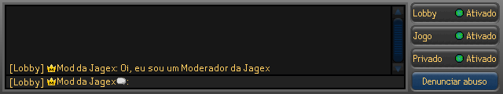
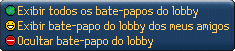
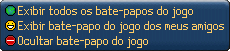
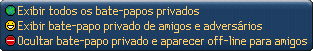
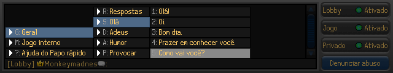
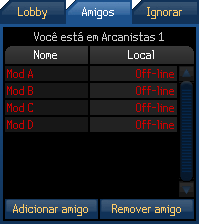
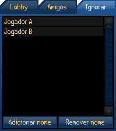
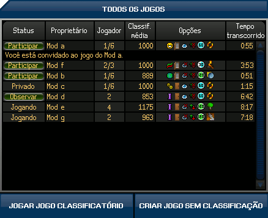
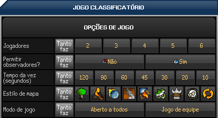
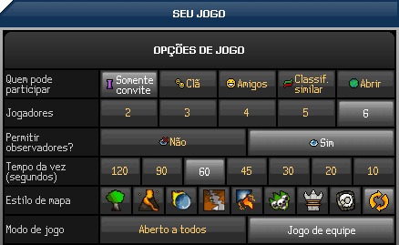

1. Como utilizo a caixa de bate-papo do FunOrb?
Bater-papo no FunOrb � uma parte importante do jogo e voc� ver� que h� v�rias formas de se manter em contato com seus amigos e interagir com outros jogadores. Para conversar, e s� digitar na caixa de bate-papo.
A caixa de bate-papo est� dispon�vel durante os jogos multijogadores on-line e pode ser encontrada na parte inferior da janela do jogo. Aqui s�o exibidas as mensagens enviadas ou recebidas. Se receber muitas mensagens, pode ser �til ajustar os tipos de mensagens desejados.
Os quatro bot�es no lado direito da tela do FunOrb controlam a intera��o com o sistema de bate-papo. Lobby, Jogo e Privado s�o filtros eficazes de bate-papo e Denunciar abuso permite denunciar jogadores que violaram qualquer uma das Regras de Conduta.

Os bot�es Lobby, Jogo e Privado abrem pequenos menus:



Clicando em uma das op��es acima, voc� pode filtrar as informa��es que ser�o exibidas na caixa de bate-papo. Ocultar o bate-papo do lobby ou do jogo faz com que somente os seus amigos possam falar com voc�, mas ocultar o bate-papo privado faz com que voc� apare�a como off-line para todos os outros jogadores.
Como denunciar abusos
O bot�o Denunciar Abusos � a ferramenta para denunciar qualquer jogador no FunOrb que esteja sendo desleal com outro jogador ou que esteja violando uma de nossas regras.
Quando voc� identificar este tipo de comportamento ou linguagem, clique no bot�o Denunciar Abuso, digite corretamente o nome do jogador e selecione uma das regras que foram violadas. Mais informa��es sobre como denunciar abusos est�o dispon�veis aqui.
Receberemos seu relat�rio de abuso e tomaremos medidas contra o jogador imediatamente. Se descobrirmos que voc� est� utilizando o sistema indevidamente, entretanto, as medidas ser�o adotadas contra voc�.

A fun��o Papo r�pido permite que voc� fale rapidamente e claramente em uma variedade de situa��es. Voc� pode acessar Papo r�pido simplesmente apertando a tecla "F10" em uma nova linha da janela de bate-papo, ou clicando no �cone Papo r�pido pr�ximo a seu nome na parte inferior da janela de bate-papo.
Quando voc� tiver selecionado Papo r�pido, ver� que um menu vai aparecer em sua janela de bate-papo com uma sele��o de categorias para conversa. Nelas voc� pode encontrar v�rias op��es:

Voc� pode clicar nestes t�tulos para abrir subse��es para te ajudar a construir suas frases. A categoria "Geral" cont�m op��es de respostas (sim, n�o, etc.), sauda��es e despedidas, astral, emoticons e provoca��es. A categoria "Interjogo" te permite organizar jogos no FunOrb ou no RuneScape.
Voc� pode selecionar uma dessas categorias clicando nelas ou digitando a letra correspondente. Ent�o, se voc� gostaria de fazer um coment�rio geral, por exemplo, saudando algu�m, voc� precisa primeiro digitar "G" para abrir "Geral", depois "S" para abrir "Sauda��es" e depois "1 a 5" para selecionar o que gostaria de dizer. Cada categoria vai abrir uma subcategoria para refinar o que voc� gostaria de falar. Voc� pode continuar clicando nas op��es ou digitando as teclas relevantes.
Teclas de atalho do Papo r�pido:
- Backspace:Volta para o n�vel anterior
- Home:Volta para o n�vel do topo no menu
- F9: Responde automaticamente � �ltima coisa que apareceu na sua janela de bate-papo
- F10: Abre o menu de Papo r�pido
- F11: Repete a �ltima coisa que voc� falou
- Esc: Fecha o menu de Papo r�pido
No FunOrb, ter amigos pode ser bastante �til. N�o � de admirar: fazer amigos de todo o mundo � bacana e interessante. Para ajud�-lo a gerenciar seus amigos, voc� recebeu uma lista de amigos e uma lista de ignorados, que podem ser encontradas no lobby de multijogadores.

A lista de amigos permite que voc� mantenha contato com amizades feitas em todos os jogos da Jagex, incluindo o RuneScape!
Para adicionar um amigo a sua lista, clique no bot�o marcado como "Adicionar amigo" e digite o nome da pessoa que voc� deseja adicionar. Tamb�m � poss�vel adicionar um amigo clicando no nome dele com o bot�o direito do mouse na janela de bate-papo, lista do lobby de multijogadores ou lista de jogadores e selecionando a op��o adequada.
Ap�s adicionar uma pessoa � lista de amigos, voc� ser� informado sempre que seu amigo dizer login ou sair de um jogo da Jagex (a n�o ser que as configura��es de privacidade dele bloqueiem esse recurso - consulte as fun��es do bate-papo, acima). Os jogadores na lista que estiverem jogando ser�o exibidos na cor verde, os que estiverem jogando em servidores diferentes ser�o exibidos na cor amarelo, e os que n�o estiverem jogando em servidores multijogadores ser�o exibidos na cor vermelha.
Voc� tamb�m pode enviar uma mensagem privada a uma pessoa da sua lista que esteja jogando no momento. Clique no nome do jogador ou na linha de bate-papo, selecione "Enviar mensagem privada para (nome do jogador)" e digite a mensagem. Para remover algu�m da lista, clique em "Remover amigo" e digite o nome da pessoa que voc� quer remover. Tamb�m � poss�vel clicar no nome do jogador e selecionar "Remover amigo" no menu.

Caso n�o deseje receber mensagens de um jogador espec�fico, coloque o nome dele na lista de ignorados.
Para fazer isto, clique no bot�o "Adicionar nome" localizado na parte inferior e digite o nome da pessoa que deseja bloquear.
Voc� tamb�m pode adicionar jogadores � lista de ignorados clicando com o bot�o direito do mouse nos nomes na janela de bate-papo e selecionando a op��o desejada.
Para remover algu�m da lista, clique no bot�o "Remover nome" e digite o nome da pessoa que deseja remover.
Existem dois tipos de jogos multijogadores no FunOrb, qualificat�rios e n�o qualificat�rios. Nos jogos n�o qualificat�rios, um jogador pode definir um conjunto de op��es para uma sess�o multijogador e convidar seus amigos para participarem. Jogos qualificat�rios s�o jogados contra uma sele��o aleat�ria de jogadores, o que limita as op��es que podem ser alteradas, al�m de que seus amigos n�o podem ingressar no jogo.
A tela principal do lobby � automaticamente definida para exibir todos os jogos multijogadores dispon�veis. A partir deste ponto voc� pode ingressar em um jogo ou assisti-lo, ou criar o seu pr�prio jogo n�o qualificat�rio.

Jogos qualificat�rios
Para ser colocado nas tabelas de classifica��o em jogos multijogadores, voc� deve jogar partidas qualificat�rias. Quanto mais partidas ganhar, melhor ser� sua qualifica��o.
Para impedir que alguns jogadores obtenham vantagens desleais, selecionamos seus advers�rios quando voc� entra em um jogo qualificat�rio - dessa forma n�o � poss�vel jogar com seus amigos. No entanto, voc� ainda pode definir algumas op��es do jogo, dependendo das prefer�ncias pessoais.
Segue um exemplo de op��es de jogo qualificat�rio de Arcanistas. As op��es dispon�veis depender�o do jogo que est� sendo jogado.

Jogos n�o qualificat�rios
Os jogos n�o qualificat�rios n�o contam para a qualifica��o pessoal, mas s�o muito mais personaliz�veis que os jogos qualificat�rios: voc� pode especificar op��es de jogo, convidar amigos ou membros do cl� RuneScape, permitir que jogadores com qualifica��es semelhantes joguem ou mesmo deixar o jogo em aberto para qualquer jogador.
� importante notar que ao criar ou ingressar em um jogo multijogador, voc� ingressar� no jogo muito mais r�pido se possuir menos op��es definidas. Para ingressar em um jogo rapidamente, defina todas as op��o dispon�veis em "N�o se preocupe".
Quando seus amigos estiverem no mesmo servidor e estiverem esperando no lobby para come�ar um novo jogo, voc� pode clicar nos nomes deles na lista de amigos e convid�-los para o jogo. Lembre-se de que todos os jogadores que podem ser convidados (incluindo amigos que estejam no lobby) ser�o exibidos na janela pop-up "Convidar jogadores".
